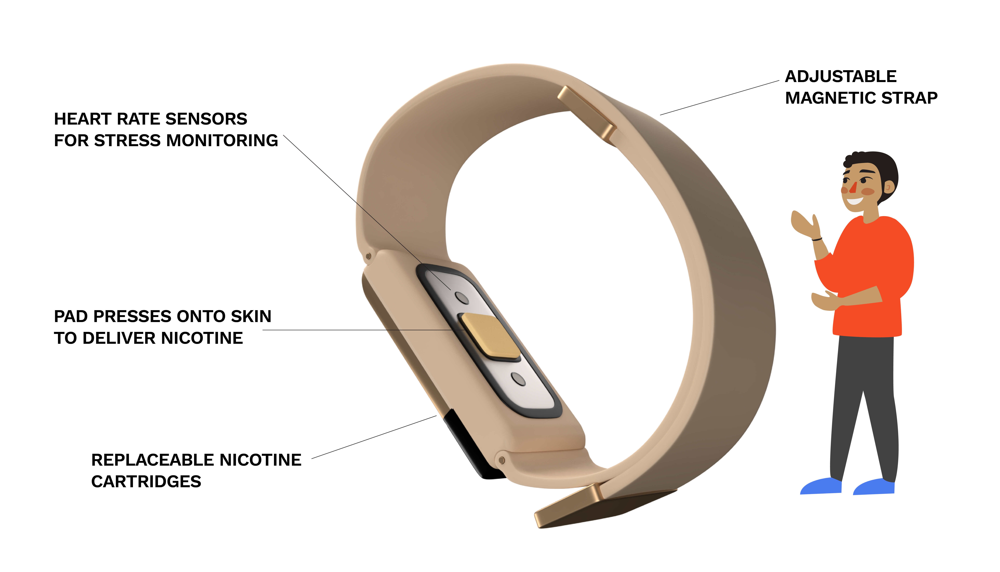
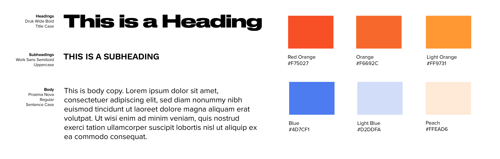
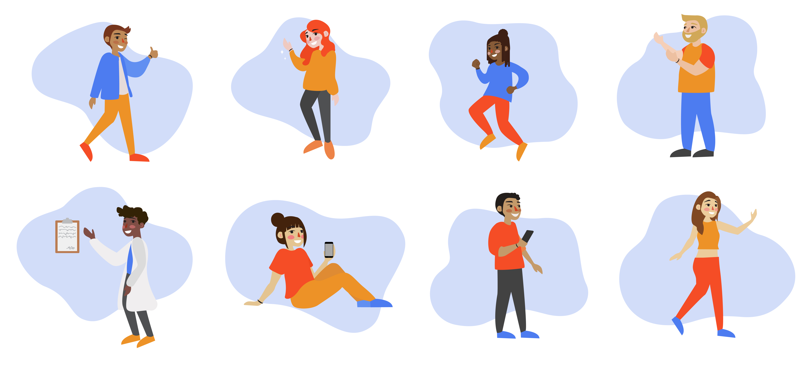
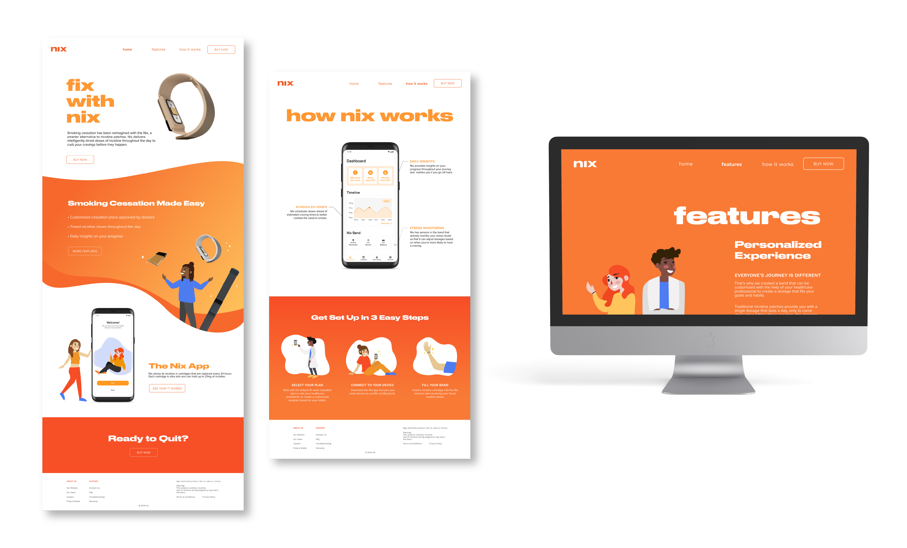

Oct '19 - Dec '19 (9 weeks)
Adobe Illustrator, Sketch, Figma
Web Design, Branding, Illustration, Research
An increasing amount of young adults are turning e-cigarettes and vape products due to their flavours, affordability and peer pressure. While e-nicotine products do not contain as many toxic chemicals as traditional cigarettes, they are not without their own health risks. Once they have started, users find that it is difficult to quit vaping because of the addictive nature of nicotine. Thus, our team wanted to explore how a smart device could help users with smoking cessation and nicotine addiction.
We came up with Nix, an adjustable smart nicotine band. The band uses sensors to track stress and delivers timed doses of nicotine based on when users are likely to feel a craving. The band is designed to resemble a fitness tracker so that it isn’t so obvious when a user needs help quitting smoking/nicotine.
We looked into competitors in the fields of smart smoking cessation aids and nicotine replacement therapy. There weren't too many competitors and only one truly tackled the issue of nicotine addiction directly: Chrono Therapeutics’ SmartStop, a smart nicotine patch. We decided to move away from the patch idea towards a more comfortable wearable since patches were bulky and the adhesives were irritating for the skin.
Juul, one of the biggest brands in the e-nicotine market, is extremely popular with young adults in part due to their sleek branding, so we wanted to create a brand that would have the same kind of appeal. We noticed that a lot of our competitors’ brands either were very medical and cold or they were using a lot of negative vocabulary and guilt-tripping to get the user to quit smoking. We wanted our brand to inspire confidence in users that they can stop smoking rather than instill fear or guilt.
We selected orange as our main color because it is associated with determination and it has high visibility. It is bright and happy but it’s not as aggressive as red. We used blue as a secondary color because it’s complimentary to orange so it provides a nice contrast. We selected Druk Wide Bold for headings, Work Sans for Subheadings and Proxima Nova for body text.
In terms of imagery, we used a mix of 3D models of our product and illustration. We used big close up shots of our product to show off the details because we wanted it to feel more like a luxury tech product than a medical device so people would actually want to wear it. We decided to use illustrations of people people rather than little anthropomorphic blobs so that the users could more easily relate to them. We have a total of eight different characters that we used: the doctor and the other Nix users. The illustrations were used with the renders so that the brand didn’t lean too much to one side, like too tech-y or too “cute”, so they balanced each other out.
Overall, I think this was a successful start to tackling the challenge of smoking cessation and nicotine addiction. We were able to leverage each of our team members’ strengths to create our marketing deliverables (packaging for our product and a marketing website) as well as a prototype for the accompanying app.
Some of the main challenges that arose for me personally was figuring out how to balance the illustrations with the 3D renders and figuring out how to make the brand seem friendly and approachable without appearing too childish.
If we were to continue working on this project, I would like to perform more research (we were instructed not to perform primary research for this project) and user testing so that we could see how users actually feel about the product. I’d also be interested in exploring more how the character illustrations could be used within the app to encourage the user through notifications, something that we discussed as a team but did not have time to implement.